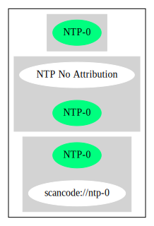

Key |
Value |
|---|---|
Fullname |
NTP No Attribution |
Shortname |
NTP-0 |
Rating |
Unknown, probably Attention or Stop or No-Go |
Classification |
NoCopyleft |
Other Names:
scancode://ntp-0
Homepage: https://github.com/tytso/e2fsprogs/blob/master/lib/et/et_name.c
SPDX: http://spdx.org/licenses/NTP-0.json
Permission to use, copy, modify, and distribute this software and
its documentation for any purpose is hereby granted, provided that
the names of M.I.T. and the M.I.T. S.I.P.B. not be used in
advertising or publicity pertaining to distribution of the software
without specific, written prior permission. M.I.T. and the
M.I.T. S.I.P.B. make no representations about the suitability of
this software for any purpose. It is provided "as is" without
express or implied warranty.{
"__impliedNames": [
"NTP-0",
"NTP No Attribution",
"scancode://ntp-0"
],
"__impliedId": "NTP-0",
"facts": {
"SPDX": {
"isSPDXLicenseDeprecated": false,
"spdxFullName": "NTP No Attribution",
"spdxDetailsURL": "http://spdx.org/licenses/NTP-0.json",
"_sourceURL": "https://spdx.org/licenses/NTP-0.html",
"spdxLicIsOSIApproved": false,
"spdxSeeAlso": [
"https://github.com/tytso/e2fsprogs/blob/master/lib/et/et_name.c"
],
"_implications": {
"__impliedNames": [
"NTP-0",
"NTP No Attribution"
],
"__impliedId": "NTP-0",
"__isOsiApproved": false,
"__impliedURLs": [
[
"SPDX",
"http://spdx.org/licenses/NTP-0.json"
],
[
null,
"https://github.com/tytso/e2fsprogs/blob/master/lib/et/et_name.c"
]
]
},
"spdxLicenseId": "NTP-0"
},
"Scancode": {
"otherUrls": null,
"homepageUrl": "https://github.com/tytso/e2fsprogs/blob/master/lib/et/et_name.c",
"shortName": "NTP-0",
"textUrls": null,
"text": "Permission to use, copy, modify, and distribute this software and\nits documentation for any purpose is hereby granted, provided that\nthe names of M.I.T. and the M.I.T. S.I.P.B. not be used in\nadvertising or publicity pertaining to distribution of the software\nwithout specific, written prior permission. M.I.T. and the\nM.I.T. S.I.P.B. make no representations about the suitability of\nthis software for any purpose. It is provided \"as is\" without\nexpress or implied warranty.",
"category": "Permissive",
"osiUrl": null,
"owner": "MIT",
"_sourceURL": "https://github.com/nexB/scancode-toolkit/blob/develop/src/licensedcode/data/licenses/ntp-0.yml",
"key": "ntp-0",
"name": "NTP No Attribution",
"spdxId": "NTP-0",
"notes": null,
"_implications": {
"__impliedNames": [
"scancode://ntp-0",
"NTP-0",
"NTP-0"
],
"__impliedId": "NTP-0",
"__impliedCopyleft": [
[
"Scancode",
"NoCopyleft"
]
],
"__calculatedCopyleft": "NoCopyleft",
"__impliedText": "Permission to use, copy, modify, and distribute this software and\nits documentation for any purpose is hereby granted, provided that\nthe names of M.I.T. and the M.I.T. S.I.P.B. not be used in\nadvertising or publicity pertaining to distribution of the software\nwithout specific, written prior permission. M.I.T. and the\nM.I.T. S.I.P.B. make no representations about the suitability of\nthis software for any purpose. It is provided \"as is\" without\nexpress or implied warranty.",
"__impliedURLs": [
[
"Homepage",
"https://github.com/tytso/e2fsprogs/blob/master/lib/et/et_name.c"
]
]
}
}
},
"__impliedCopyleft": [
[
"Scancode",
"NoCopyleft"
]
],
"__calculatedCopyleft": "NoCopyleft",
"__isOsiApproved": false,
"__impliedText": "Permission to use, copy, modify, and distribute this software and\nits documentation for any purpose is hereby granted, provided that\nthe names of M.I.T. and the M.I.T. S.I.P.B. not be used in\nadvertising or publicity pertaining to distribution of the software\nwithout specific, written prior permission. M.I.T. and the\nM.I.T. S.I.P.B. make no representations about the suitability of\nthis software for any purpose. It is provided \"as is\" without\nexpress or implied warranty.",
"__impliedURLs": [
[
"SPDX",
"http://spdx.org/licenses/NTP-0.json"
],
[
null,
"https://github.com/tytso/e2fsprogs/blob/master/lib/et/et_name.c"
],
[
"Homepage",
"https://github.com/tytso/e2fsprogs/blob/master/lib/et/et_name.c"
]
]
}